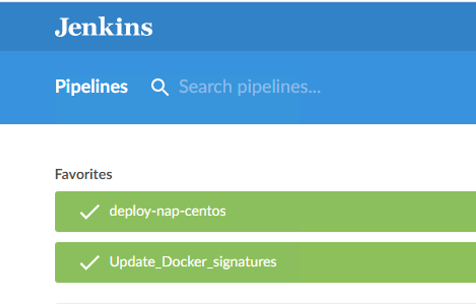

Step 9 - Deploy App Protect via CI/CD pipeline¶
In this module, we will install NGINX Plus and App Protect packages on CentOS with a CI/CD toolchain. NGINX teams created Ansible modules to deploy it easily in a few seconds.
Note
The official Ansible NAP role is available here https://github.com/nginxinc/ansible-role-nginx-app-protect and the NGINX Plus role here https://github.com/nginxinc/ansible-role-nginx
Uninstall the previous running NAP
{kind=link}
{kind=link}
Run the CI/CD pipeline from Jenkins
Steps:

- RDP to the Jumphost with credentials
user:user- Open
Chromeand openJenkins(if not already opened)- Select the pipeline
deploy-nap-centosand run it
{kind=link}
The pipeline is as below:
node {
stage 'Checkout'
// // Get some code from a GitHub repository
git url: 'http://10.1.20.4/nginx-app-protect/ansible_deploy.git'
sh 'ansible-galaxy install -r requirements.yml'
stage name: 'Deploy NGINX Plus', concurrency: 1
dir("${env.WORKSPACE}"){
ansiblePlaybook inventory: 'hosts', playbook: 'install-nginx-plus.yml'
}
stage name: 'Deploy NAP', concurrency: 1
dir("${env.WORKSPACE}"){
ansiblePlaybook inventory: 'hosts', playbook: 'app-protect.yml'
}
stage name: 'Workaround resolver', concurrency: 1
dir("${env.WORKSPACE}"){
ansiblePlaybook inventory: 'hosts', playbook: 'copy-nginx-conf.yml'
}
}
Note
This pipeline executes 3 Ansible playbooks.
- One playbook to install NGINX Plus
- One playbook to install NAP
- The last playbook is just there to fix an issue in UDF for the DNS resolver

When the pipeline is finished executing, perform a browser test within Chrome using the Arcadia NAP Docker bookmark
Note
Congrats, you deployed NGINX Plus and NAP with a CI/CD pipeline. You can check the pipelines in GitLab if you are interested to see what has been coded behind the scenes. But it is straight forward as the Ansible modules are provided by F5/NGINX.
Video of this module (force HD 1080p in the video settings)